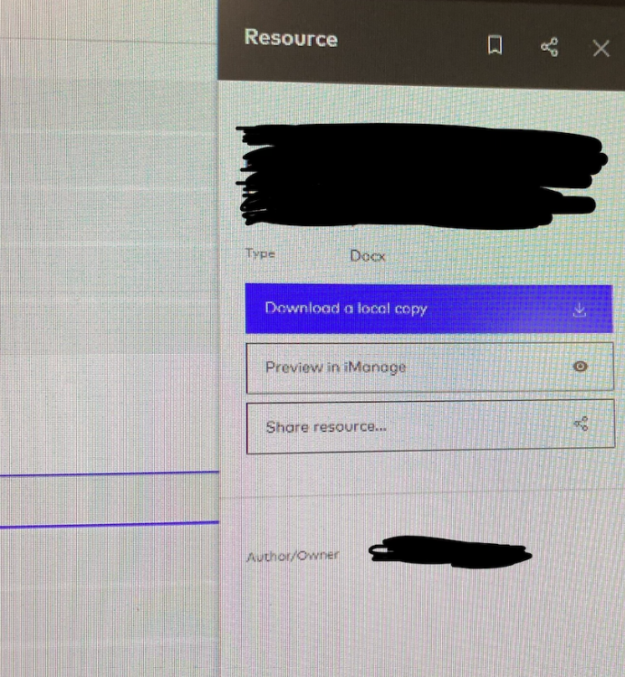
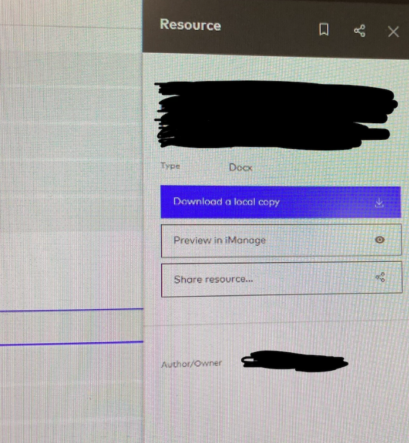

background
problem statement
Legal professionals managing technology contracts struggle to locate and access relevant past agreements needed as templates, resulting in extended work hours, increased client costs, and growing frustration with their ability to efficiently create new contracts.
Previous Document Library Audit
BluePrint is an in-house DMS at Cooley, designed by one person who was working at the firm at the time. It features a bare-bones layout that lists all documents out at once without much reasoning for their organization, and can feature broken snippets of documents that don’t detail it in full, taking up time for associates who need to sort through these kinds of files quickly.
 

image details are blurred for privacy reasons
List-Based Layout Issues
- Contracts are displayed in a long, linear list.
- Users must scroll extensively to browse contracts.
- No clear way to filter or categorize contracts efficiently.
Minimal Contract Descriptions
- Contracts lack detailed previews or summaries.
- Key details (type, date, key clauses) are not visible.
- Users waste time opening irrelevant contracts.
Search Functionality Limitations
- Search does not prioritize relevance.
- Users rely on trial and error for useful results.
- No advanced search filters (keyword, date, clauses).
solution
the revamped Blueprint Website
A complete redesign of the Blueprint website that better supports fast navigation and document view at a glace.
Relies on Familiarity
Leveraging familiar features from popular applications can streamline BluePrint’s onboarding process, allowing users to apply existing knowledge seamlessly.

Improved Document Information Display
Changing “Modified by” to “Uploaded by” to help users identify the uploader for inquiries. All document details are now consolidated in one area for easier viewing, with markings for snippet documents to address stakeholder concerns.

Enhanced Organization with Tags and Folders
Tags allow users to filter documents easily, improving searchability. The folders feature enables grouping files for seamless viewing, sharing, and interaction, with folders displayed at the top for quick access and contents visible below.

Working Blueprint Prototype
research
To solidify the target user groups and to better fit the site to its audience, we interviewed two Cooley Associates and a Cooley DOJ Legal Assistant.
We initially interviewed the associates about the Blueprint platform and followed up with user testing throughout the project process
user Personas
After identifying the reoccuring themes of the platform, here is how we defined the customer stakeholders:

.png)
competitive analysis
Detail your proposed solution.

UX Flows
Detail your proposed solution.


lo-fi design
UI sketches
Showcase the results of your case study.

hi-fi design
Showcase the results of your case study.

reflection
Summarize your findings and key takeaways.